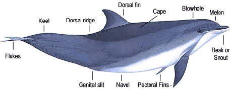
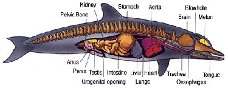
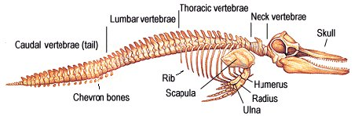

Cetaceans have shed most of the external traces of their terrestrial ancestry and are supremely adapted to underwater life. Their body shape has become streamlined and they have lost most of their body hair, to improve hydrodynamic efficiency; they have short stiff necks, which are essential for swimming at high speed; their front limbs have turned into flippers and their hind limbs have disappeared; they have muscular tails to provide a powerful means of propulsion; and their nostrils have moved to the top of their head for easy breathing at the surface.
There are also many other, less obvious adaptations. For example, they have excellent hearing, which compensates for a poor (or entirely lacking) sense of smell, and for the uncertainties of visibility underwater; they have a high tolerance to carbon dioxide, to help with lengthy dives, and are two or three times more efficient than land mammals at using the oxygen in inhaled air; their rib cages are collapsible for deep diving; and they have layers of insulating fat to keep them warm.


